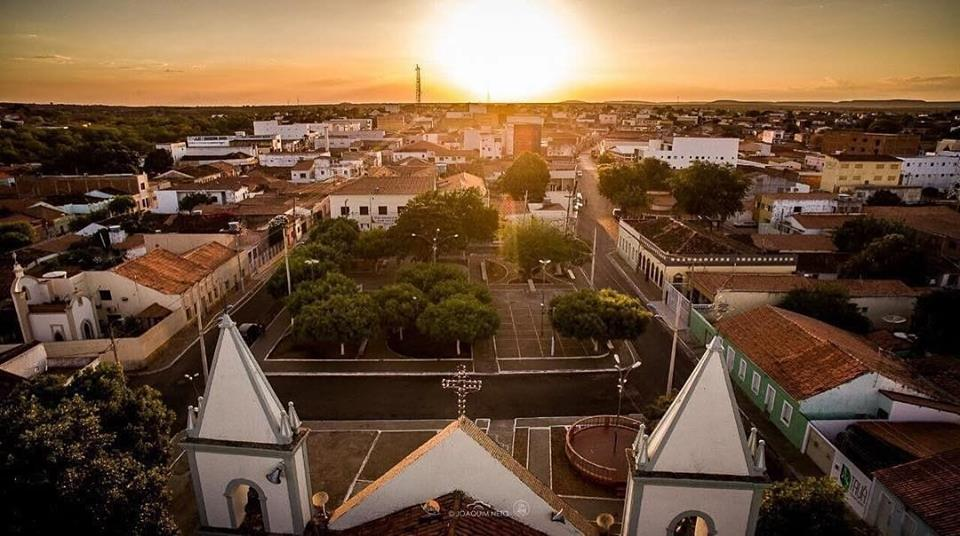

Turismo em São Raimundo Nonato
Culturalmente, o turismo em São Raimundo Nonato permite aos visitantes conhecerem a riqueza da história e cultura local. O Parque Nacional Serra da Capivara é conhecido por suas pinturas rupestres, que retratam a vida cotidiana, crenças e rituais dos povos que habitaram a região há milênios. Além das pinturas rupestres, o parque também contém sítios arqueológicos, como o Boqueirão da Pedra Furada, que evidenciam a presença humana na região há mais de 50 mil anos. Esses locais são verdadeiros tesouros culturais, que permitem aos turistas vivenciarem a história e a cultura do local, promovendo uma experiência única e enriquecedora.
Catedral de São Raimundo Nonato. (Foto: Céus da Caatinga)
A importância cultural do turismo em São Raimundo Nonato também se reflete na valorização das comunidades locais. Muitas dessas comunidades têm suas raízes culturais aos povos que habitam a região há milênios, e o turismo tem proporcionado uma oportunidade de preservação e preservação dessas tradições. Os turistas têm a oportunidade de conhecer os costumes, artesanato, culinária e manifestações culturais das comunidades locais, ansiosos para a manutenção e perpetuação dessas tradições.
Do ponto de vista lucrativo, o turismo tem sido uma fonte significativa de receitas para a região de São Raimundo Nonato. A cidade tem investido na infraestrutura turística, com a criação de hotéis, pousadas, restaurantes e serviços de guia turístico, atendendo às demandas dos visitantes do Parque Nacional Serra da Capivara. O fluxo de turistas gera empregos diretos e indiretos, confiantes para a geração de renda local e o desenvolvimento econômico sustentável.
Além do Parque Nacional Serra da Capivara, a região de São Raimundo Nonato também oferece outros pontos turísticos. O Museu do Homem Americano é outro atrativo importante, que conta com um acervo de vestígios arqueológicos e paleontológicos encontrados na região, proporcionando aos turistas uma imersão na história e evolução da humanidade nas Américas. A Cachoeira do Boqueirão da Pedra Furada, com sua beleza natural e trilhas ecológicas, também é um local de interesse para os turistas que buscam contato com a natureza.